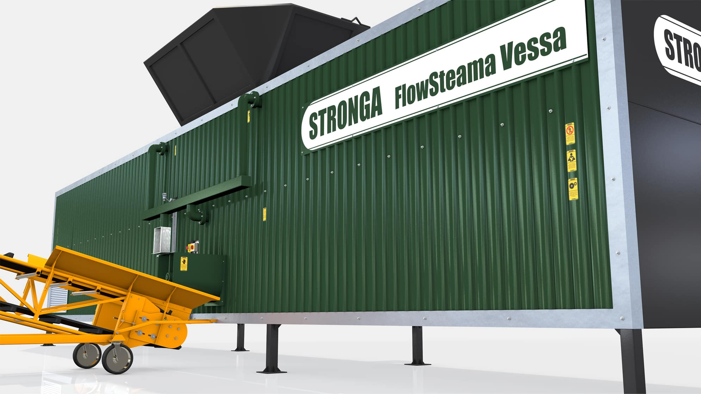
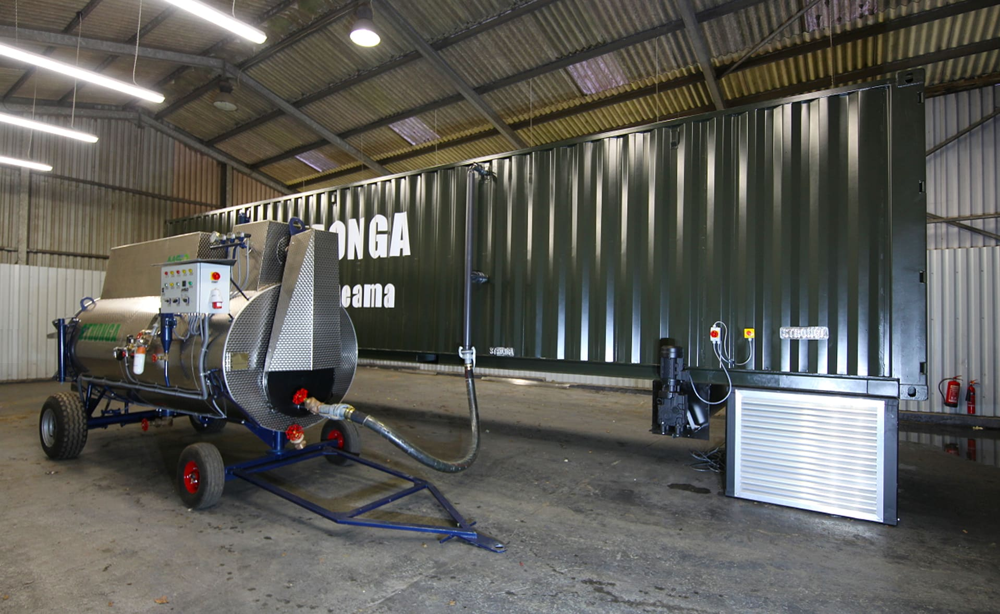
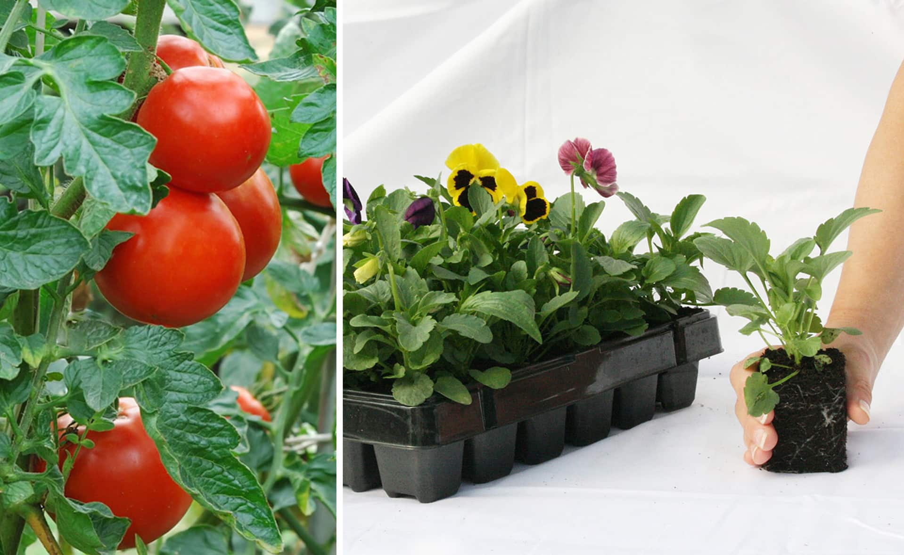
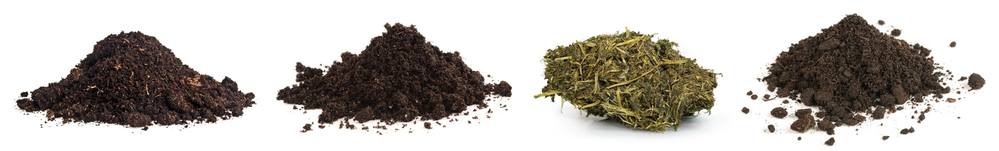

HookLoada
HookLoada DumpLoada
DumpLoada DumpLoada HP
DumpLoada HP TruckLoada
TruckLoada Hooklift Solutions
Hooklift Solutions RoadGrada
RoadGrada Wet Materials & By-Products
Wet Materials & By-Products FlowDrya Green Series
FlowDrya Green Series FlowDrya International Series
FlowDrya International Series Heatex
Heatex Drying Stations
Drying Stations FlowSteama
FlowSteamaFlowSteama
Heat treatment systems for contaminated soils, substrates, manures & composts
Creating valuable organic media
Steam heat treatment can be used by horticultural, agricultural, recycling and soil remediation companies as a highly effective means of cleaning soils, substrates, composts, manures and growing media from fungi, harmful organisms, bacteria and weed seeds. Remediating organic media through steam sterilisation is an environmentally-safe, non-hazardous and highly efficient method of combatting invasive species and harmful pathogens in organic media.
FlowSteama Vessa and Rova Series’ can add value across a wide range of materials, including; steam “cleaning” soil, topsoil, compost, food waste, green waste, agricultural manures and growing media blends in various forms. Ecosphare Innovations supply FlowSteama equipment and steam boilers for various scales of operation. Contact our knowledgeable sales team today to discuss the scale and scope of your project and let us build your own heat treatment system.

More profit. Less waste.
FlowSteama empowers clients to improve profits by creating a saleable, reusable material while reducing costs associated with waste disposal and importing virgin products. Discover below the horticultural benefits associated with steam sterilizing growing media blends. Advantages for agricultural, recycling and land remediation groups can be discovered further down this web page
Produce extra crop with hygienic growing media ✔; Reduce losses from diseased crop ✔; Reduce media import costs with your own circular growing economy ✔; Save cost on buying chemicals ✔; Reuse and recycle existing growing media; better resource-efficiency ✔; Reduce costs associated with disposing of used media ✔; Reduce handling of used media ✔; Improve nutrient uptake; increasing plant yield and quality ✔; Create ideal conditions for thriving crop ✔; In-house control of growing media hygiene ✔; Avoid use of banned, ecosystem-damaging chemicals ✔; Meet increasingly higher health and welfare standards from supermarkets and customers ✔

Transformation capability
Transforming contaminated organic fractions into valuable, clean organic media permits safe reuse of growing media in landscaping, gardens, nurseries and commercial greenhouses. Hot steam from high temperature steam boilers eliminates pathogens by heat treating organic media to temperatures up to 90˚C for a variable residency time. Working together with a special, super-heated, low pressure, free-flowing steam generator, FlowSteama has been proven through lab reporting to reliably kill harmful contaminants and invasive plant species, such as:
Pathogenic bacteria ✔; Larvae ✔; Nematodes ✔; Spores ✔; Fungi (moulds & yeasts) ✔; Weeds seeds ✔; Pythium ✔; Fusarium ✔; Rhizoctonia ✔; Other diseases & pests ✔
Steam-cleaned growing media can be reused time and time again after each crop or season to produce strong, healthy, saleable products.

Replacing chemicals with steam
In comparison to alternative sterilisation methods such as chemical sterilisation, in-vessel composting and sheet steaming, FlowSteama offers the most efficient, reliable, environmentally-friendly and legal way of treating contaminated soil and organic media to comply with quality control regulations in your region.
Based on modern scientific research; glyphosate (e.g. Roundup), methyl bromide, basamide and other products, which have been effectively used in the past, are now forbidden or considered hazardous to health. Super-heated clean steam solutions from Ecosphare Innovations provide an excellent alternative which is environmentally-friendly, residue-free and with no risk of resistance formation. With chemical bans introduced across the globe, now is the time to invest in clean steam sterilisation to add significant value to your operation, saving cost and improving output while protecting ecosystems.
Ecosphare Innovations expertise across
Sectors & Materials
Ecosphare Innovations soil sterilisation systems are well suited for use across a wide range of materials in different sectors. While our core expertise to date has been in providing growing media sterilizing equipment for use in horticulture, we offer the same high-level expertise for recycling companies, land and soil remediation groups, industrial applications and agriculture.

Horticultural Applications
Steam sterilizing growing media
Soil steam sterilization, or ‘heat treatment’, has consistently proven itself as a plant-protection measure against all weed seeds, pathogens, bacteria and fungi in contaminated growing media. The result is clean, safe, hygienic media that is ideally prepared for growing healthy, high quality, high yielding plants with shorter growing cycles. Each horticultural operation has its own characteristics, including scale, optimal growing media blend, location and plant type in production. Ecosphare Innovations offer various scales of steaming solution suited to your operation. We welcome commercial horticultural operations to collaborate with Ecosphare Innovations in optimising the right soil steaming system for optimal outcomes.
Horticulture Applications
Versatile, flexible and well-proven, Ecosphare Innovations FlowSteama offers the most capable in-vessel continuous soil sterilisation solution available in the market; creating clean and healthy output across a wide range of organic substrates and growing recipes. Discover the possibilities for heat treating a wide range of growing media constituents:
Mushroom compost sterilisation ✔; Bark mulch substrate sterilisation ✔; Sphagnum peat moss sterilisation ✔; Coconut coir sterilisation ✔; Soil sterilisation ✔; Topsoil sterilisation ✔; Woody biomass sterilisation ✔; Green waste sterilisation ✔; Animal manure sterilisation ✔; & more ✔
Horticultural Applications
Peat in growing media; a case-study
Modern peat sterilisation solutions from Ecosphare Innovations enable circular growing economies; sterilising growing media blends for reuse in gardens, commercial greenhouses and nurseries. In a peat-based growing media situation, the grower has an environmental responsibility to respect a precious, finite resource which takes 1000s of years to form. The rate at which peat is used in the 21st century is currently unsustainable.
• Peat is non-renewable – it will run out.
• Peat is created extremely slowly over 1000s of years.
• Peat bogs are a huge store of atmospheric carbon – far greater than trees.
• Peat bogs support unique wildlife habitats that are destroyed in some unmanaged situations
Respect the resource
Reuse & recycle growing media
Horticultural Applications
Circular Growing Economy
There is little debate about the utility of peat in growing media but there is concern about overuse and mismanagement of precious peatlands. The arguments for steam sterilising peat for reuse as a growing media are strong; and Ecosphare Innovations play a small part in facilitating this niche circular growing economy. We fully respect the commercial growers who are pioneering together with Ecosphare Innovations towards a more resource-efficient future.
Play your part.
Recycling Applications
Creating clean resource from waste streams
Discover below a few recycling applications where FlowSteama can be applied to create clean, saleable resource from used and contaminated organic by-products.
• Converting green waste streams directly into valuable, clean, sterilised composts, meeting current
standards.
• Empowering recycling companies to convert low grade, screened waste material into valuable, saleable, weed
and invasive species free topsoil.
• Remediation of weed and bacteria infested soil fractions, including specific invasive species local to
your region, such as Japanese Knotweed or Giant Hogweed.
• Unlocking the potential of lower grade biomass residues, transforming them into clean, saleable resource
with clear evidence of sterilization and conformity to local standards.
Agricultural Applications
Steam sterilizing root crop soils
Impeccable hygiene standards in field-scale operations are becoming more and more important in food production situations. FlowSteama can add significant value and reduce risk of soil-borne pests and cross contamination when growing potatoes, sugar beet, onions and other root crops. The risks are particularly high from vegetable cleaning, screening and processing where topsoil needs to be returned to the field after use, but cross contamination of root crop soil also needs to be avoided.
Clean steam sterilization is the answer to protect your crop from cross contamination while economically optimising the overall health and welfare standards on your farm.
Sterilize root crop soils
with Ecosphare Innovations
Agricultural Applications
Steam sterilizing agricultural manures
Intensive poultry farming and pig rearing operations are struggling with increasing regulation relating to the safe disposal of manures with issues including contaminating watercourses and nitrate leaching. After separation, the fibre element of agricultural manures can be sterilised in an evidenced FlowSteama continuous steaming process which reliably kills weed seeds and harmful contaminants, such as salmonella and e-coli.
Sterilising fibre fractions from manures enables producers to create pathogen-free, nutrient-rich soil improver or fertilizer which can be sold with confidence across regional or international borders to meet various standards. A key benefit of steam sterilizing agricultural manures is the release of nutrients where cell walls are broken down, enabling more nutrients to be available to the plant, reducing the need for destructive chemical fertilisers.
Agricultural Applications
Steam sterilizing agricultural materials
FlowSteama continuous soil heat treatment can be used to steam-clean the following agricultural materials, enabling the recovery of phosphates and nutrients with no risk of cross-contamination of crop:
Broiler litter sterilisation ✔; Layer litter sterilisation ✔; Turkey manure sterilisation ✔; Separated pig manure fibre sterilisation ✔; Anaerobic Digestion fibre sterilisation ✔; Dairy manure sterilisation ✔; Other animal manures ✔; Green waste crop residue sterilisation ✔; Topsoil residue sterilisation ✔; & other agricultural materials ✔
Contact Ecosphare Innovations today to discuss the suitability of your agricultural material with FlowSteama.
Respect the resource
Reuse & recycle growing media
Well-proven, tried & tested approach
For more than 100 years, soil steaming treatment has been successfully used in horticulture, agriculture and soil and land remediation, among other sectors. Soil steam sterilisation has consistently proven itself as an effective soil preparation method, providing protection against weeds, bacteria, fungi and other pests. Superheated steam is widely recognised by practitioners and scientists as the most effective approach for cleaning infected soils and substrates.
Now is the time to get ahead of the game with FlowSteama, making your enterprise even more profitable and ecosystem-friendly through investing in well-proven, modern heat treatment solutions. Working on sites in North America and Europe, our soil steaming systems have been proven to produce a completely clean soil improver, well prepared for growing the healthiest plants.
Sustainable circular operations
Use once > Steam sterilise > Reuse
Click the 2D icons below to learn more about the two types of soil steam sterilisation systems for sale by Ecosphare Innovations.